dbGaPCheckup Vignette
Lacey W. Heinsberg and Daniel E. Weeks
November 04, 2022
Source:vignettes/dbGaPCheckup_vignette.Rmd
dbGaPCheckup_vignette.Rmd1 Copyright information
Copyright 2022, University of Pittsburgh. All Rights Reserved. License: GPL-2
2 Overview
This document describes our R package, dbGaPCheckup,
which implements a series of check, awareness, utility, and reporting
functions to help you ensure your scientific data set meets formatting
requirements for submission to the National Library of Medicine’s
database of Genotypes and Phenotypes (dbGaP).
[Paper citation to be added upon pre-print or publication].
This vignette was designed to give you a broad overview of the
utility of this R package. A complete table of functions and
descriptions is shown below. See the Quick Start
(dbGaPCheckup) vignette for a brief introduction to the
package.
| Function_Name | Function_Type | Function_Description |
|---|---|---|
| field_check | check | Checks for dbGaP required fields: variable name (VARNAME), variable description (VARDESC), units (UNITS), and variable value and meaning (VALUES). |
| pkg_field_check | check | Checks for package-level required fields: variable type (TYPE), minimum value (MIN), and maximum value (MAX). |
| dimension_check | check | Checks that the number of variables match between the data set and data dictionary. |
| name_check | check | Checks that variable names match between the data set and data dictionary. |
| id_check | check | Checks that the first column of the data set is the primary ID for each participant labeled as SUBJECT_ID and that the values contain no spaces, padded zeros, or other illegal characters. |
| row_check | check | Checks for empty or duplicate rows in the data set. |
| NA_check | check | Checks for NA values in the data set and, if NA values are present, also checks for an encoded NA value=meaning description. |
| type_check | check | If a TYPE field exists, this function checks for any TYPE entries that aren’t allowable per dbGaP instructions. |
| values_check | check | Checks for potential errors in the VALUES columns by
ensuring (1) required format of VALUE=MEANING (e.g., 0=No
or 1=Yes); (2) no leading/trailing spaces near the equals sign (e.g.,
0=No vs. 0 = No); (3) all variables of TYPE encoded have VALUES entries;
and (4) all variables with VALUES entries are listed as TYPE
encoded. |
| integer_check | check | Checks for variables that appear to be incorrectly listed as TYPE integer. |
| decimal_check | check | Checks for variables that appear to be incorrectly listed as TYPE decimal. |
| misc_format_check | check | Checks miscellaneous dbGaP formatting requirements to ensure (1) no duplicate variable names; (2) variable names do not contain “dbgap”; (3) there are no duplicate column names in the dictionary; and (4) column names falling after VALUES column are unnamed. |
| description_check | check | Checks for unique and non-missing descriptions (VARDESC) for every variable in the data dictionary. |
| minmax_check | check | Checks for variables that have values exceeding the listed MIN or MAX. |
| missing_value_check | check | Checks for variables that have non-encoded missing value codes. |
| complete_check | bulk check | Runs the entire workflow (field_check, pkg_field_check, dimension_check, name_check, id_check, row_check, NA_check, type_check, values_check, integer_check, decimal_check, misc_format_check, description_check, minmax_check, and missing_value_check). |
| add_missing_fields | utility | Adds additional fields required by this package including variable type (‘TYPE’), minimum value (‘MIN’), and maximum value (‘MAX’). |
| name_correct | utility | Updates the data dictionary so variable names match those listed in the data set. |
| reorder_dictionary | utility | Reorders the data dictionary to match the data set. |
| reorder_data | utility | Reorders the data set to match the data dictionary. |
| id_first_data | utility | Reorders the data set so that SUBJECT_ID comes first. |
| id_first_dict | utility | Reorders the data dictionary so that SUBJECT_ID comes first. |
| label_data | utility, awareness | Adds non-missing information from the data dictionary as attributes to the data. |
| value_meaning_table | utility, awareness | Generates a value-meaning table by parsing the VALUES fields. |
| missingness_summary | awareness | Summarizes the amount of missingness in the data set. |
| value_missing_table | awareness | Checks for consistent usage of encoded values and missing value codes between the data dictionary and the data set. |
| dictionary_search | awareness | Facilitates searches of the data dictionary. |
| check_report | bulk check, reporting | Generates a user-readable report of the checks run by the complete_check function. |
| create_report | reporting, awareness | Generates a textual and graphical report of the selected variables in HTML format. |
| create_awareness_report | reporting, awareness | Generates an awareness report, calling missingness_summary and value_missing_table functions. |
3 Installation
The package is written in R language.
To install from CRAN, proceed as follows:
install.packages("dbGaPCheckup")To install the development version from GitHub, proceed as follows:
- Install and load the
devtoolspackage by issuing these commands:
install.packages("devtools")
library(devtools)- Install and load the
dbGaPCheckupby issuing these commands:
install_github("lwheinsberg/dbGaPCheckup/pkg")If you wish to have this vignette installed and accessible within your R help pages, use this command instead:
install_github("lwheinsberg/dbGaPCheckup/pkg", build_opts = c("--no-resave-data", "--no-manual"), build_vignettes = TRUE)
After the dbGaPCheckup package has been installed, you
can view load the package using this command:
and view this vignette using:
browseVignettes("dbGaPCheckup")
4 Data format, file types, and file names
dbGaP has a host of formatting requirements for data set submission.
This package focuses on two required files: the Subject Phenotype data set (DS) and the corresponding Subject Phenotype data dictionary (DD). Brief instructions on setting up the files have been included below.
4.1 Files
Checks that are NOT currently embedded into this package that we want to draw special attention to include:
You may ONLY submit tab-delimited .txt and .xlsx files. –> Tab-delimited txt files are preferable for the data set. –> Excel (.xlsx) format is preferable for the data dictionary.
File names should NOT contain special characters, spaces, hyphens, brackets, periods, or forward (/) or backward slashes (). –> For example, ‘data.set.txt’, ‘data-set.txt’, ‘data set.txt’ are all illegal names, but ‘data_set.txt’ would be OK.
Excel files are only allowed to have one sheet (i.e., no multiple tabs/sheets are allowed).
4.2 Subject Phenotype Data Set (DS)
In brief, the Subject Phenotype data set consists of the study data
for participants. In the data set, each row represents a participant,
and each column represents a study variable. The first column in the
data set needs to be labled SUBJECT_ID and contains the
unique participant identifier as an integer or string value. Integers
should not have zero padding or spaces. Specifically, only the following
characters can be included in the ID: English letters, Arabic numerals,
period (.), hyphen (-), underscore (_), at symbol (@), and the pound
sign (#). Columns falling after SUBJECT_ID will be unique
to a given study, but include participant factors such as age, sex, etc.
Formatting for an example data set is shown below.
| SUBJECT_ID | SAMPLE_ID | AGE | SEX | PREGNANT | HEIGHT | WEIGHT | BMI | OBESITY | ABD_CIRC | HIP_CIRC | ABD_SKF | SUP_SKF | RESIST | REACT | CUFFSIZE | BP_SYSTOLIC | BP_DIASTOLIC | HTN | SMOKING_HX | LENGTH_SMOKING_YEARS | HEART_RATE | PHYSICAL_ACTIVITY | HX_DM | HX_STROKE | HX_ANXIETY | HX_DEPRESSION | SOCIAL_SUPPORT | PERCEIVED_CONFLICT | PERCEIVED_HEALTH |
|---|---|---|---|---|---|---|---|---|---|---|---|---|---|---|---|---|---|---|---|---|---|---|---|---|---|---|---|---|---|
| 1 | 1001 | 33 | 0 | -4444 | 163.5000 | 54.4 | 20.34995 | 0 | 116.08677 | 119.2750 | 28 | 23 | 340 | 40 | 0 | 120 | 80 | 0 | 0 | -4444.0 | 50 | 360 | 0 | 0 | 1 | 1 | 1 | 25 | 10 |
| 2 | 1002 | 45 | 1 | 0 | 159.3369 | 93.2 | 36.70990 | 1 | 110.39444 | 115.8551 | 24 | 27 | 354 | 45 | 3 | 110 | 60 | 0 | -9999 | -4444.0 | 54 | 0 | 1 | 0 | 0 | 0 | 5 | 25 | 4 |
| 3 | 1003 | 34 | 0 | -4444 | 185.0000 | 95.0 | 27.75749 | 0 | 104.29832 | 104.4375 | 29 | 25 | 358 | 55 | 1 | 106 | 50 | 0 | 1 | 1.5 | 75 | 100 | -9999 | 0 | -9999 | -9999 | 4 | 24 | 8 |
| 4 | -9999 | 55 | 0 | -4444 | 171.5000 | 85.7 | 29.13752 | 0 | 121.77705 | 118.4763 | 51 | 44 | 389 | 56 | 1 | 158 | 95 | 1 | 0 | -4444.0 | 90 | 180 | 1 | 0 | 0 | 0 | 2 | 10 | 5 |
| 5 | 1005 | 45 | 0 | -4444 | 180.0000 | 101.4 | 31.29630 | 1 | 84.14132 | 104.6367 | 42 | 25 | 356 | 64 | 2 | 169 | 100 | 1 | 1 | 14.0 | 85 | -9999 | 1 | -9999 | 0 | 0 | 3 | 5 | 6 |
| 6 | 1006 | 46 | 1 | 0 | -9999.0000 | -9999.0 | -9999.00000 | -9999 | -9999.00000 | -9999.0000 | -9999 | -9999 | -9999 | -9999 | 0 | 105 | 40 | 0 | 1 | 25.0 | 72 | 180 | 0 | 0 | 0 | 0 | 4 | 1 | 7 |
Other example data set provided by dbGaP can be found at the NCBI submission guide. See “Example of a Subject Phenotypes DS File” and “6a_SampleAttributes_DS.txt”.
4.3 Subject Phenotype Data Dictionary (DD)
In the Subject Phenotype data dictionary, each row represents a unique variable (that corresponds to columns in the data set), and each column represents information about that variable (see example below). For more detailed data dictionary formatting instructions, visit the NCBI submission guide and see heading “APPENDIX for Data Dictionary (DD) File Descriptions and Specifications”, which includes a table of required and suggested column headers and descriptions, as well as an example file called “6b_SampleAttributes_DD.xlsx”.
| VARNAME | VARDESC | DOCFILE | TYPE | UNITS | MIN | MAX | RESOLUTION | COMMENT1 | COMMENT2 | VARIABLE_SOURCE | SOURCE_VARIABLE_ID | VARIABLE_MAPPING | UNIQUEKEY | COLLINTERVAL | ORDER | VALUES | …18 | …19 | …20 | …21 | …22 |
|---|---|---|---|---|---|---|---|---|---|---|---|---|---|---|---|---|---|---|---|---|---|
| SUBJECT_ID | Participant ID | NA | integer | NA | NA | NA | NA | NA | NA | NA | NA | NA | NA | NA | NA | NA | NA | NA | NA | NA | NA |
| SAMPLE_ID | Sample ID | NA | integer, encoded value | NA | NA | NA | NA | NA | NA | NA | NA | NA | NA | NA | NA | -9999=missing value | NA | NA | NA | NA | NA |
| AGE | Age at enrollment | NA | integer | years | NA | NA | NA | NA | NA | NA | NA | NA | NA | NA | NA | NA | NA | NA | NA | NA | NA |
| SEX | Sex assigned at birth | NA | integer, encoded value | NA | 0 | 1 | NA | NA | NA | NA | NA | NA | NA | NA | NA | 0=male | 1=female | NA | NA | NA | NA |
| PREGNANT | Pregnancy status at enrollment | NA | integer, encoded value | NA | 0 | 1 | NA | NA | NA | NA | NA | NA | NA | NA | NA | 0=no | 1=yes | -9999=missing value | -4444=not applicable, participant assigned male at birth | NA | NA |
| HEIGHT | Height of participant | NA | decimal, encoded value | cm | NA | NA | NA | NA | NA | NA | NA | NA | NA | NA | NA | -9999=missing value | NA | NA | NA | NA | NA |
Two special data dictionary formatting notes:
The final columns of the data dictionary list all unique values/meanings of all encoded values, one value per cell, of which will vary based on the number of VALUE codes for a specific variable. For example, if your data set contains a variable called
SEXin which 0 indicates female and 1 indicates male, these columns are designed to communicatevalue=meaning(e.g., 0=female). TheVALUESheader must be the last column header and should appear ONLY in the column above the FIRST encoded value that is listed. The remaining value column header cells should be left blank. (Note that when we read in our example data set with blank column names afterVALUES, R automatically fills in the column names with the column number (e.g.,...18,...19, etc.). This is acceptable for the package level checks, but not allowable for the files that are submitted to dbGaP.)This package requires several fields beyond those required by the dbGaP formatting requirements. Specifically, dbGaP requires only that the data dictionary contains the following fields: variable name (
VARNAME); variable description (VARDESC); units (UNITS); and variable value and meaning (VALUE). Because this package was designed to perform both dbGaP formatting requirement checks, as well as a series of awareness checks to help you ensure data accuracy, this package also requires that the data dictionary contains the following additional fields: minimum (MIN) and maximum (MAX) values (allowed to be left blank, but column headers are required) and the data type (e.g., integer, decimal, encoded value, string;TYPE) fields. If your data dictionary does not include these additional fields already, you can simply use theadd_missing_fieldsfunction to auto fill them (see below).
5 Execution with example runs and interpretation
5.1 Check, utility, and awareness functions
Note that all “check” functions included in our package return an
invisible tibble that contains (1) Time (Time stamp); (2) Name (Name of
the function); (3) Status (Passed/Failed); (4) Message (A copy of the
message the function printed out); (5) Information (More detailed
information about the potential errors identified). This was designed to
streamline the complete workflow approach and to return a succinct
report back to you via check_report (see below). Note that
there are some dependencies between checks (e.g., name_check
values_check is dependent upon field_check),
so there are pre-checks embedded within many checks.
5.1.1 Example 1
data(ExampleD)We recommend starting with the check_report function,
which includes 15 embedded checks. Note that for all functions, you need
to first specify the name of the data dictionary, followed by the name
of the data set.
e1_report <- check_report(DD.dict.D, DS.data.D, non.NA.missing.codes=c(-4444, -9999))
#> # A tibble: 15 × 3
#> Function Status Message
#> <chr> <chr> <chr>
#> 1 field_check Passed Passed: required fields VARNAME, VARDESC, …
#> 2 pkg_field_check Failed ERROR: not all package-level required fiel…
#> 3 dimension_check Passed Passed: the variable count matches between…
#> 4 name_check Passed Passed: the variable names match between t…
#> 5 id_check Passed Passed: All ID variable checks passed.
#> 6 row_check Passed Passed: no blank or duplicate rows detecte…
#> 7 NA_check Not attempted ERROR: Required pre-check pkg_field_check …
#> 8 type_check Failed ERROR: TYPE column not found. Consider usi…
#> 9 values_check Not attempted ERROR: Required pre-check type_check faile…
#> 10 integer_check Not attempted ERROR: Required pre-check pkg_field_check …
#> 11 decimal_check Not attempted ERROR: Required pre-check pkg_field_check …
#> 12 misc_format_check Passed Passed: no check-specific formatting issue…
#> 13 description_check Failed ERROR: missing and duplicate descriptions …
#> 14 minmax_check Not attempted ERROR: Required pre-check pkg_field_check …
#> 15 missing_value_check Not attempted ERROR: Required pre-check pkg_field_check …
#> --------------------
#> pkg_field_check: Failed
#> ERROR: not all package-level required fields are present in the data dictionary. Consider using the add_missing_fields function to auto fill these fields.
#> $pkg_field_check.Info
#> TYPE MIN MAX
#> FALSE FALSE FALSE
#>
#> --------------------
#> type_check: Failed
#> ERROR: TYPE column not found. Consider using the add_missing_fields function to autofill TYPE.
#> $type_check.Info
#> [1] "ERROR: TYPE column not found."
#>
#> --------------------
#> description_check: Failed
#> ERROR: missing and duplicate descriptions found in data dictionary.
#> $description_check.Info
#> # A tibble: 4 × 2
#> VARNAME VARDESC
#> <chr> <chr>
#> 1 PREGNANT NA
#> 2 REACT NA
#> 3 HEIGHT Height of participant
#> 4 WEIGHT Height of participant
#>
#> --------------------In this check, we see that several checks passed (e.g.,
field_check), some failed (e.g., type_check),
and some could not be attempted because a pre-check in the function
failed (e.g., missing_value_check).
The check_report output can be examined to better
understand the issues at hand. For example, let’s examine the
pkg_field_check results more closely. You can call more
detailed information for each check using the following commands:
e1_report$Message[2]
#> [1] "ERROR: not all package-level required fields are present in the data dictionary. Consider using the add_missing_fields function to auto fill these fields."
e1_report$Information$pkg_field_check.Info
#> TYPE MIN MAX
#> FALSE FALSE FALSEHere, we see that the TYPE, MIN, and
MAX columns required for the complete workflow approach in
this package are missing. But never fear - we can simply use the
add_missing_fields function to add these in!
DD.dict_updated <- add_missing_fields(DD.dict.D, DS.data.D)
#> $Message
#> [1] "CORRECTED ERROR: not all package-level required fields were present in the data dictionary. The missing fields have now been added! TYPE was inferred from the data, and MIN/MAX have been added as empty fields."
#>
#> $Missing
#> [1] "TYPE" "MIN" "MAX"Now that our error has been corrected, let’s return to
check_report. Don’t forget to call in the updated version
of the data dictionary here!
e1_report.v2 <- check_report(DD.dict_updated, DS.data.D, non.NA.missing.codes=c(-4444, -9999)) # Note! Don't forget to call in the updated version of the data dictionary here!
#> # A tibble: 15 × 3
#> Function Status Message
#> <chr> <chr> <chr>
#> 1 field_check Passed Passed: required fields VARNAME, VARDESC, UNITS, …
#> 2 pkg_field_check Passed Passed: package-level required fields TYPE, MIN, …
#> 3 dimension_check Passed Passed: the variable count matches between the da…
#> 4 name_check Passed Passed: the variable names match between the data…
#> 5 id_check Passed Passed: All ID variable checks passed.
#> 6 row_check Passed Passed: no blank or duplicate rows detected.
#> 7 NA_check Passed Passed: no NA values detected in data set.
#> 8 type_check Passed Passed: All TYPE entries found are accepted by db…
#> 9 values_check Passed Passed: all four VALUES checks look good.
#> 10 integer_check Passed Passed: all variables listed as TYPE integer appe…
#> 11 decimal_check Passed Passed: all variables listed as TYPE decimal appe…
#> 12 misc_format_check Passed Passed: no check-specific formatting issues ident…
#> 13 description_check Failed ERROR: missing and duplicate descriptions found i…
#> 14 minmax_check Passed Passed: when provided, all variables are within t…
#> 15 missing_value_check Failed ERROR: some variables have non-encoded missing va…
#> --------------------
#> description_check: Failed
#> ERROR: missing and duplicate descriptions found in data dictionary.
#> $description_check.Info
#> # A tibble: 4 × 2
#> VARNAME VARDESC
#> <chr> <chr>
#> 1 PREGNANT NA
#> 2 REACT NA
#> 3 HEIGHT Height of participant
#> 4 WEIGHT Height of participant
#>
#> --------------------
#> missing_value_check: Failed
#> ERROR: some variables have non-encoded missing value codes.
#> $missing_value_check.Info
#> VARNAME VALUE MEANING PASS
#> 16 CUFFSIZE -9999 <NA> FALSE
#>
#> --------------------As you can see, now 13 out of 15 checks pass, but the workflow fails
at description_check and missing_value_check.
Specifically, in description_check we see that variables
PREGNANT and REACT were identified as having
missing variable descriptions (VARDESC), and variables
HEIGHT and WEIGHT incorrectly have identical
descriptions. In missing_value_check, we see that the
variable CUFFSIZE contains a -9999 encoded
value that is not specified in a VALUES column. While we
have included several functions that support “quick fixes”
(add_missing_fields, name_correct,
reorder_dictionary, reorder_data,
id_first_data, and id_first_dict), the issues
identified here are a bit more complex and study-specific, so would need
to be corrected manually in your data dictionary before moving on. For
now, we will leave this example and move on to the next one!
5.1.2 Example 2
data(ExampleL)
e2_report <- check_report(DD.dict.L, DS.data.L)
#> # A tibble: 15 × 3
#> Function Status Message
#> <chr> <chr> <chr>
#> 1 field_check Passed Passed: required fields VARNAME, VARDESC, …
#> 2 pkg_field_check Passed Passed: package-level required fields TYPE…
#> 3 dimension_check Passed Passed: the variable count matches between…
#> 4 name_check Failed ERROR: the variable names DO NOT match bet…
#> 5 id_check Passed Passed: All ID variable checks passed.
#> 6 row_check Passed Passed: no blank or duplicate rows detecte…
#> 7 NA_check Not attempted ERROR: Required pre-check name_check faile…
#> 8 type_check Passed Passed: All TYPE entries found are accepte…
#> 9 values_check Failed ERROR: at least one VALUES check flagged p…
#> 10 integer_check Not attempted ERROR: Required pre-check name_check faile…
#> 11 decimal_check Not attempted ERROR: Required pre-check name_check faile…
#> 12 misc_format_check Failed ERROR: at least one check failed.
#> 13 description_check Failed ERROR: missing and duplicate descriptions …
#> 14 minmax_check Not attempted ERROR: Required pre-check name_check faile…
#> 15 missing_value_check Not attempted ERROR: Required pre-check name_check faile…
#> --------------------
#> name_check: Failed
#> ERROR: the variable names DO NOT match between the data dictionary and the data. If the intention behind the variable names is correct, consider using the name_correct function to automatically rename variables to match.
#> $name_check.Info
#> # A tibble: 2 × 2
#> Data Dict
#> <chr> <chr>
#> 1 Data: SMOKING_HX Dict: SMOKING_HISTORY
#> 2 Data: HX_DEPRESSION Dict: DEPRESSION_HX
#>
#> --------------------
#> values_check: Failed
#> ERROR: at least one VALUES check flagged potentials issues. See Information for more details.
#> $values_check.Info
#> column_name values.check vname type
#> 4 VALUES3 FALSE CUFFSIZE integer, encoded value
#> 6 VALUES FALSE HTN integer, encoded value
#> 7 VALUES FALSE PERCEIVED_HEALTH integer, encoded value
#> 9 VALUES5 FALSE 28 integer, encoded value
#> 10 VALUES4 FALSE 28 integer, encoded value
#> 12 VALUES2 FALSE 16 integer, encoded value
#> 14 VALUES FALSE RESIST integer, encoded value
#> 15 VALUES FALSE SAMPLE_ID integer
#> 16 VALUES FALSE SEX integer
#> problematic_description
#> 4 2 means large
#> 6 0 indicates no
#> 7 Between 1 and 10 with higher values indicating better perceived health
#> 9 5 = a great deal
#> 10 4 = quite a bit
#> 12 1 =medium
#> 14 <NA>
#> 15 -9999=missing value
#> 16 0=male
#> check
#> 4 Check 1: Is an equals sign present for all values columns?
#> 6 Check 1: Is an equals sign present for all values columns?
#> 7 Check 1: Is an equals sign present for all values columns?
#> 9 Check 2: Are there any leading/trailing spaces near the first equals sign?
#> 10 Check 2: Are there any leading/trailing spaces near the first equals sign?
#> 12 Check 2: Are there any leading/trailing spaces near the first equals sign?
#> 14 Check 3: Do all variables of TYPE encoded have at least one VALUES entry?
#> 15 Check 4: Are all variables with VALUES entries of TYPE encoded?
#> 16 Check 4: Are all variables with VALUES entries of TYPE encoded?
#>
#> --------------------
#> misc_format_check: Failed
#> ERROR: at least one check failed.
#> $misc_formatting_check.Info
#> # A tibble: 7 × 6
#> check.name check.description check…¹ details col.n…² correct
#> <chr> <chr> <chr> <chr> <chr> <lgl>
#> 1 Check 1 Duplicate variable name check Passed NA NA NA
#> 2 Check 2 Check for use of `dbgap` in variab… Passed NA NA NA
#> 3 Check 4 Column names after `VALUES` should… Failed NA VALUES2 FALSE
#> 4 Check 4 Column names after `VALUES` should… Failed NA VALUES3 FALSE
#> 5 Check 4 Column names after `VALUES` should… Failed NA VALUES4 FALSE
#> 6 Check 4 Column names after `VALUES` should… Failed NA VALUES5 FALSE
#> 7 Check 4 Column names after `VALUES` should… Failed NA VALUES6 FALSE
#> # … with abbreviated variable names ¹check.status, ²col.name
#>
#> --------------------
#> description_check: Failed
#> ERROR: missing and duplicate descriptions found in data dictionary.
#> $description_check.Info
#> # A tibble: 2 × 2
#> VARNAME VARDESC
#> <chr> <chr>
#> 1 PREGNANT NA
#> 2 REACT NA
#>
#> --------------------In example 2, we see that the first three checks
(field_check, pkg_field_check, and
dimension_check) and several others further down the
workflow pass, but the fourth check (name_check) fails.
Looking at the check_report output more closely, we see
that there are two variables with names that do not match between the
data dictionary and data set.
Before we move on to investigate this issue further, please note that
we could arrive at the same conclusion using the functions individually
(rather than the complete workflow approach implemented in
check_report):
field_check(DD.dict.L) # pass
#> $Message
#> [1] "Passed: required fields VARNAME, VARDESC, UNITS, and VALUES present in the data dictionary."
pkg_field_check(DD.dict.L) # pass
#> $Message
#> [1] "Passed: package-level required fields TYPE, MIN, and MAX present in the data dictionary."
dimension_check(DD.dict.L, DS.data.L) # pass
#> $Message
#> [1] "Passed: the variable count matches between the data dictionary and the data."
#>
#> $Information
#> Variables in dictionary Variables in data
#> 30 30
name_check(DD.dict.L, DS.data.L) # failed
#> $Message
#> [1] "ERROR: the variable names DO NOT match between the data dictionary and the data. If the intention behind the variable names is correct, consider using the name_correct function to automatically rename variables to match."
#>
#> $Information
#> # A tibble: 2 × 2
#> Data Dict
#> <chr> <chr>
#> 1 Data: SMOKING_HX Dict: SMOKING_HISTORY
#> 2 Data: HX_DEPRESSION Dict: DEPRESSION_HXIn looking more closely at the name_check output, we
then see that, while the “intent” between the names match (i.e., “hx” is
sometimes used as shorthand for “history”), there are a couple of
discrepancies between the data dictionary and data set. Luckily, we have
included a “quick fix” for this simple issue as implemented in the
name_correct function so that you can continue working
through the checks. Specifically, name_correct updates the
names in the DS to match the names listed in the data dictionary.
Similarly, if the variable names in the data dictionary and data set
matched identically, but were in the wrong order, the
reorder_dictionary function could be used to create a new
version of the data dictionary to match the order presented in the data
set! Back to the example at hand, though – let’s give the
name_correct function a try now!
DS.data_updated <- name_correct(DD.dict.L, DS.data.L)
#> $Message
#> [1] "CORRECTED ERROR: the variable names differ between the data dictionary and the data. **ALERT** Renaming variable(s) to match those listed in the data dictionary."
#>
#> $Information
#> # A tibble: 2 × 3
#> Data Dict New.Data
#> <chr> <chr> <chr>
#> 1 Original data name: SMOKING_HX Dictionary name: SMOKING_HISTORY New data n…
#> 2 Original data name: HX_DEPRESSION Dictionary name: DEPRESSION_HX New data n…Now that our error has been corrected, let’s return to
check_report. Similar to above, be sure to call in our
updated data set!
e2_report.v2 <- check_report(DD.dict.L, DS.data_updated, non.NA.missing.codes=c(-4444, -9999)) # Calling in updated data set
#> Warning: Expected 2 pieces. Missing pieces filled with `NA` in 1 rows [3].
#> Warning: Expected 2 pieces. Missing pieces filled with `NA` in 1 rows [1].
#> Expected 2 pieces. Missing pieces filled with `NA` in 1 rows [1].
#> # A tibble: 15 × 3
#> Function Status Message
#> <chr> <chr> <chr>
#> 1 field_check Passed Passed: required fields VARNAME, VARDESC, UNITS, …
#> 2 pkg_field_check Passed Passed: package-level required fields TYPE, MIN, …
#> 3 dimension_check Passed Passed: the variable count matches between the da…
#> 4 name_check Passed Passed: the variable names match between the data…
#> 5 id_check Passed Passed: All ID variable checks passed.
#> 6 row_check Passed Passed: no blank or duplicate rows detected.
#> 7 NA_check Passed Passed: no NA values detected in data set.
#> 8 type_check Passed Passed: All TYPE entries found are accepted by db…
#> 9 values_check Failed ERROR: at least one VALUES check flagged potentia…
#> 10 integer_check Failed ERROR: some variables listed as TYPE integer do n…
#> 11 decimal_check Failed ERROR: some variables listed as TYPE decimal do n…
#> 12 misc_format_check Failed ERROR: at least one check failed.
#> 13 description_check Failed ERROR: missing and duplicate descriptions found i…
#> 14 minmax_check Failed ERROR: some variables have values outside of the …
#> 15 missing_value_check Failed ERROR: some variables have non-encoded missing va…
#> --------------------
#> values_check: Failed
#> ERROR: at least one VALUES check flagged potentials issues. See Information for more details.
#> $values_check.Info
#> column_name values.check vname type
#> 4 VALUES3 FALSE CUFFSIZE integer, encoded value
#> 6 VALUES FALSE HTN integer, encoded value
#> 7 VALUES FALSE PERCEIVED_HEALTH integer, encoded value
#> 9 VALUES5 FALSE 28 integer, encoded value
#> 10 VALUES4 FALSE 28 integer, encoded value
#> 12 VALUES2 FALSE 16 integer, encoded value
#> 14 VALUES FALSE RESIST integer, encoded value
#> 15 VALUES FALSE SAMPLE_ID integer
#> 16 VALUES FALSE SEX integer
#> problematic_description
#> 4 2 means large
#> 6 0 indicates no
#> 7 Between 1 and 10 with higher values indicating better perceived health
#> 9 5 = a great deal
#> 10 4 = quite a bit
#> 12 1 =medium
#> 14 <NA>
#> 15 -9999=missing value
#> 16 0=male
#> check
#> 4 Check 1: Is an equals sign present for all values columns?
#> 6 Check 1: Is an equals sign present for all values columns?
#> 7 Check 1: Is an equals sign present for all values columns?
#> 9 Check 2: Are there any leading/trailing spaces near the first equals sign?
#> 10 Check 2: Are there any leading/trailing spaces near the first equals sign?
#> 12 Check 2: Are there any leading/trailing spaces near the first equals sign?
#> 14 Check 3: Do all variables of TYPE encoded have at least one VALUES entry?
#> 15 Check 4: Are all variables with VALUES entries of TYPE encoded?
#> 16 Check 4: Are all variables with VALUES entries of TYPE encoded?
#>
#> --------------------
#> integer_check: Failed
#> ERROR: some variables listed as TYPE integer do not appear to be integers.
#> $integer_check.Info
#> [1] "BP_DIASTOLIC" "SMOKING_HISTORY"
#>
#> --------------------
#> decimal_check: Failed
#> ERROR: some variables listed as TYPE decimal do not appear to be decimals.
#> $decimal_check.Info
#> [1] "ABD_SKF" "SUP_SKF"
#>
#> --------------------
#> misc_format_check: Failed
#> ERROR: at least one check failed.
#> $misc_formatting_check.Info
#> # A tibble: 7 × 6
#> check.name check.description check…¹ details col.n…² correct
#> <chr> <chr> <chr> <chr> <chr> <lgl>
#> 1 Check 1 Duplicate variable name check Passed NA NA NA
#> 2 Check 2 Check for use of `dbgap` in variab… Passed NA NA NA
#> 3 Check 4 Column names after `VALUES` should… Failed NA VALUES2 FALSE
#> 4 Check 4 Column names after `VALUES` should… Failed NA VALUES3 FALSE
#> 5 Check 4 Column names after `VALUES` should… Failed NA VALUES4 FALSE
#> 6 Check 4 Column names after `VALUES` should… Failed NA VALUES5 FALSE
#> 7 Check 4 Column names after `VALUES` should… Failed NA VALUES6 FALSE
#> # … with abbreviated variable names ¹check.status, ²col.name
#>
#> --------------------
#> description_check: Failed
#> ERROR: missing and duplicate descriptions found in data dictionary.
#> $description_check.Info
#> # A tibble: 2 × 2
#> VARNAME VARDESC
#> <chr> <chr>
#> 1 PREGNANT NA
#> 2 REACT NA
#>
#> --------------------
#> minmax_check: Failed
#> ERROR: some variables have values outside of the MIN to MAX range.
#> $minmax_check.Info
#> # A tibble: 1 × 5
#> Trait Check ListedMin ListedMax OutOfRangeValues
#> <chr> <lgl> <dbl> <dbl> <list>
#> 1 PERCEIVED_CONFLICT FALSE 1 15 <int [11]>
#>
#> --------------------
#> missing_value_check: Failed
#> ERROR: some variables have non-encoded missing value codes.
#> $missing_value_check.Info
#> VARNAME VALUE MEANING PASS
#> 14 RESIST -9999 <NA> FALSE
#> 16 CUFFSIZE -9999 <NA> FALSE
#>
#> --------------------We now see that name_check now passes, along with
several other functions in the workflow, but we have failed on
values_check and several others.
Investigating this check failure further by looking at the
check_report output, we see a few issues that, due to the
subjectivity and complexity of different data set, will need to be
manually corrected before moving on. For the purposes of this tutorial,
we will now leave this data set to move on to a new one, but in reality,
we would correct this issue and return again to
check_report.
5.1.3 Example 3
data(ExampleB)Again, we will start with the check_report function.
e3_report <- check_report(DD.dict.B, DS.data.B)
#> # A tibble: 15 × 3
#> Function Status Message
#> <chr> <chr> <chr>
#> 1 field_check Passed Passed: required fields VARNAME, VARDESC, UNITS, …
#> 2 pkg_field_check Passed Passed: package-level required fields TYPE, MIN, …
#> 3 dimension_check Passed Passed: the variable count matches between the da…
#> 4 name_check Passed Passed: the variable names match between the data…
#> 5 id_check Passed Passed: All ID variable checks passed.
#> 6 row_check Passed Passed: no blank or duplicate rows detected.
#> 7 NA_check Passed Passed: no NA values detected in data set.
#> 8 type_check Passed Passed: All TYPE entries found are accepted by db…
#> 9 values_check Passed Passed: all four VALUES checks look good.
#> 10 integer_check Passed Passed: all variables listed as TYPE integer appe…
#> 11 decimal_check Passed Passed: all variables listed as TYPE decimal appe…
#> 12 misc_format_check Passed Passed: no check-specific formatting issues ident…
#> 13 description_check Passed Passed: unique description present for all variab…
#> 14 minmax_check Passed Passed: when provided, all variables are within t…
#> 15 missing_value_check Passed Passed: all missing value codes have a correspond…
#> [1] "All 15 checks passed."In the above chunk, check_report determines that all 15
checks were passed! But ALERT — this is misleading!!!!! Rerunning the
check with our missing value codes defined, we now see an issue at
missing_value_check, which underscores the importance of
specifying missing value codes.
e3_report.v2 <- check_report(DD.dict.B, DS.data.B, non.NA.missing.codes=c(-9999))
#> # A tibble: 15 × 3
#> Function Status Message
#> <chr> <chr> <chr>
#> 1 field_check Passed Passed: required fields VARNAME, VARDESC, UNITS, …
#> 2 pkg_field_check Passed Passed: package-level required fields TYPE, MIN, …
#> 3 dimension_check Passed Passed: the variable count matches between the da…
#> 4 name_check Passed Passed: the variable names match between the data…
#> 5 id_check Passed Passed: All ID variable checks passed.
#> 6 row_check Passed Passed: no blank or duplicate rows detected.
#> 7 NA_check Passed Passed: no NA values detected in data set.
#> 8 type_check Passed Passed: All TYPE entries found are accepted by db…
#> 9 values_check Passed Passed: all four VALUES checks look good.
#> 10 integer_check Passed Passed: all variables listed as TYPE integer appe…
#> 11 decimal_check Passed Passed: all variables listed as TYPE decimal appe…
#> 12 misc_format_check Passed Passed: no check-specific formatting issues ident…
#> 13 description_check Passed Passed: unique description present for all variab…
#> 14 minmax_check Passed Passed: when provided, all variables are within t…
#> 15 missing_value_check Failed ERROR: some variables have non-encoded missing va…
#> --------------------
#> missing_value_check: Failed
#> ERROR: some variables have non-encoded missing value codes.
#> $missing_value_check.Info
#> VARNAME VALUE MEANING PASS
#> 13 CUFFSIZE -9999 <NA> FALSE
#>
#> --------------------If you are not immediately sure what your missing value codes are,
you can use our value_meaning_table utility/awareness
function.
value_meaning_table(DD.dict.B)
#> VARNAME TYPE VALUE
#> 2 SAMPLE_ID integer, encoded value -9999
#> 3 SEX integer, encoded value 0
#> 4 SEX integer, encoded value 1
#> 5 HEIGHT decimal, encoded value -9999
#> 6 WEIGHT decimal, encoded value -9999
#> 7 BMI decimal, encoded value -9999
#> 8 OBESITY integer, encoded value 0
#> 9 OBESITY integer, encoded value 1
#> 10 OBESITY integer, encoded value -9999
#> 11 ABD_CIRC decimal, encoded value -9999
#> 12 HIP_CIRC decimal, encoded value -9999
#> 13 ABD_SKF integer, encoded value -9999
#> 14 SUP_SKF integer, encoded value -9999
#> 15 RESIST integer, encoded value -9999
#> 16 REACT integer, encoded value -9999
#> 17 CUFFSIZE integer, encoded value 0
#> 18 CUFFSIZE integer, encoded value 1
#> 19 CUFFSIZE integer, encoded value 2
#> 20 CUFFSIZE integer, encoded value 3
#> 21 BP_SYSTOLIC integer, encoded value -9999
#> 22 BP_DIASTOLIC integer, encoded value -9999
#> 23 HTN integer, encoded value 0
#> 24 HTN integer, encoded value 1
#> 25 HTN integer, encoded value -9999
#> 26 SMOKING_HX integer, encoded value 0
#> 27 SMOKING_HX integer, encoded value 1
#> 28 SMOKING_HX integer, encoded value -9999
#> 29 LENGTH_SMOKING_YEARS decimal, encoded value -9999
#> 30 LENGTH_SMOKING_YEARS decimal, encoded value -4444
#> 31 HEART_RATE integer, encoded value -9999
#> 32 PHYSICAL_ACTIVITY integer, encoded value -9999
#> 33 HX_DM integer, encoded value 0
#> 34 HX_DM integer, encoded value 1
#> 35 HX_DM integer, encoded value -9999
#> 36 HX_STROKE integer, encoded value 0
#> 37 HX_STROKE integer, encoded value 1
#> 38 HX_STROKE integer, encoded value -9999
#> 39 HX_ANXIETY integer, encoded value 0
#> 40 HX_ANXIETY integer, encoded value 1
#> 41 HX_ANXIETY integer, encoded value -9999
#> 42 HX_DEPRESSION integer, encoded value 0
#> 43 HX_DEPRESSION integer, encoded value 1
#> 44 HX_DEPRESSION integer, encoded value -9999
#> 45 SOCIAL_SUPPORT integer, encoded value 1
#> 46 SOCIAL_SUPPORT integer, encoded value 2
#> 47 SOCIAL_SUPPORT integer, encoded value 3
#> 48 SOCIAL_SUPPORT integer, encoded value 4
#> 49 SOCIAL_SUPPORT integer, encoded value 5
#> 50 PERCEIVED_CONFLICT integer, encoded value 1
#> 51 PERCEIVED_CONFLICT integer, encoded value 30
#> 52 PERCEIVED_HEALTH integer, encoded value 1
#> 53 PERCEIVED_HEALTH integer, encoded value 10
#> MEANING
#> 2 missing value
#> 3 male
#> 4 female
#> 5 missing value
#> 6 missing value
#> 7 missing value
#> 8 no
#> 9 yes
#> 10 missing value
#> 11 missing value
#> 12 missing value
#> 13 missing value
#> 14 missing value
#> 15 missing value
#> 16 missing value
#> 17 small
#> 18 medium
#> 19 large
#> 20 extra large
#> 21 missing value
#> 22 missing value
#> 23 no
#> 24 yes
#> 25 missing value
#> 26 no
#> 27 yes
#> 28 missing value
#> 29 missing value
#> 30 not applicable, no history of smoking
#> 31 missing value
#> 32 missing value
#> 33 no
#> 34 yes
#> 35 missing value
#> 36 no
#> 37 yes
#> 38 missing value
#> 39 no
#> 40 yes
#> 41 missing value
#> 42 no
#> 43 yes
#> 44 missing value
#> 45 very little
#> 46 little
#> 47 moderate
#> 48 quite a bit
#> 49 a great deal
#> 50 lowest possible social conflict
#> 51 highest possible social conflict
#> 52 poorest possible perceived health
#> 53 best possible perceived healthSo here we see that -9999 is a verified missing value code in this example.
5.1.4 Example 4
data(ExampleH)
e4_report <- check_report(DD.dict.H, DS.data.H, non.NA.missing.codes=c(-4444, -9999))
#> # A tibble: 15 × 3
#> Function Status Message
#> <chr> <chr> <chr>
#> 1 field_check Passed Passed: required fields VARNAME, VARDESC, UNITS, …
#> 2 pkg_field_check Passed Passed: package-level required fields TYPE, MIN, …
#> 3 dimension_check Passed Passed: the variable count matches between the da…
#> 4 name_check Passed Passed: the variable names match between the data…
#> 5 id_check Passed Passed: All ID variable checks passed.
#> 6 row_check Passed Passed: no blank or duplicate rows detected.
#> 7 NA_check Passed Passed: no NA values detected in data set.
#> 8 type_check Passed Passed: All TYPE entries found are accepted by db…
#> 9 values_check Passed Passed: all four VALUES checks look good.
#> 10 integer_check Failed ERROR: some variables listed as TYPE integer do n…
#> 11 decimal_check Passed Passed: all variables listed as TYPE decimal appe…
#> 12 misc_format_check Passed Passed: no check-specific formatting issues ident…
#> 13 description_check Passed Passed: unique description present for all variab…
#> 14 minmax_check Passed Passed: when provided, all variables are within t…
#> 15 missing_value_check Passed Passed: all missing value codes have a correspond…
#> --------------------
#> integer_check: Failed
#> ERROR: some variables listed as TYPE integer do not appear to be integers.
#> $integer_check.Info
#> [1] "SUP_SKF"
#>
#> --------------------Note that in this example, we see an error at
integer_check. Let’s investigate this further.
Specifically, we can use the awareness function to grep (i.e., search) this variable name in the dictionary
dictionary_search(DD.dict.H, search.term=c("SUP_SKF"), search.column=c("VARNAME"))
#> # A tibble: 1 × 22
#> VARNAME VARDESC DOCFILE TYPE UNITS MIN MAX RESOL…¹ COMME…² COMME…³
#> <chr> <chr> <lgl> <chr> <chr> <dbl> <dbl> <lgl> <lgl> <lgl>
#> 1 SUP_SKF Suprailiac sk… NA inte… mm NA NA NA NA NA
#> # … with 12 more variables: VARIABLE_SOURCE <lgl>, SOURCE_VARIABLE_ID <lgl>,
#> # VARIABLE_MAPPING <lgl>, UNIQUEKEY <lgl>, COLLINTERVAL <lgl>, ORDER <lgl>,
#> # VALUES <chr>, ...18 <chr>, ...19 <chr>, ...20 <chr>, ...21 <chr>,
#> # ...22 <chr>, and abbreviated variable names ¹RESOLUTION, ²COMMENT1,
#> # ³COMMENT2We can also look at the values in the data set to see that, in fact, there are some values that are decimals (not integers as the dictionary suggests).
table(DS.data.H$SUP_SKF)
#>
#> -9999 12 22 23.888 24 25 26 27 28 28.254 29
#> 3 2 4 1 4 11 4 6 2 1 1
#> 34 35 36 37 38 39 39.12 40 42 44 45
#> 4 7 3 2 3 6 1 9 2 6 3
#> 46 48 51 52
#> 4 3 2 6We can also use this awareness function to grep any variables that
are described as “skinfold” measurements to evaluate data
TYPE across variables.
dictionary_search(DD.dict.H, search.term=c("skinfold"))
#> # A tibble: 2 × 22
#> VARNAME VARDESC DOCFILE TYPE UNITS MIN MAX RESOL…¹ COMME…² COMME…³
#> <chr> <chr> <lgl> <chr> <chr> <dbl> <dbl> <lgl> <lgl> <lgl>
#> 1 ABD_SKF Abdominal ski… NA inte… mm NA NA NA NA NA
#> 2 SUP_SKF Suprailiac sk… NA inte… mm NA NA NA NA NA
#> # … with 12 more variables: VARIABLE_SOURCE <lgl>, SOURCE_VARIABLE_ID <lgl>,
#> # VARIABLE_MAPPING <lgl>, UNIQUEKEY <lgl>, COLLINTERVAL <lgl>, ORDER <lgl>,
#> # VALUES <chr>, ...18 <chr>, ...19 <chr>, ...20 <chr>, ...21 <chr>,
#> # ...22 <chr>, and abbreviated variable names ¹RESOLUTION, ²COMMENT1,
#> # ³COMMENT2Above we see that both abdominal and suprailiac skinfold thickness are listed as integers in the data dictionary, and thought to have been measured to the nearest mm.
table(DS.data.H$ABD_SKF)
#>
#> -9999 14 18 21 22 23 24 25 26 27 28 29 30
#> 3 1 2 2 1 4 11 22 4 1 6 4 2
#> 31 32 34 35 36 38 39 40 41 42 45 51 54
#> 3 2 5 4 5 6 2 1 1 1 1 1 1
#> 61 65 68
#> 2 1 1While ABD_SKF appears to be a true integer,
SUP_SKF appears to have some decimal places. This error
could be corrected either by listing SUP_SKF as
TYPE decimal, or by investigating if the data set has a
recording error.
5.1.5 Example 5
data(ExampleA)As mentioned above, if you prefer, you can also simply run the
individual checks that you are interested in rather than taking the
complete workflow approach. Note that several package-specific
pre-checks are embedded in many of the functions (e.g.,
integer_check).
id_check(DS.data.A)
#> $Message
#> [1] "Passed: All ID variable checks passed."
#>
#> $Information
#> # A tibble: 4 × 4
#> check.name check.description check.s…¹ details
#> <chr> <chr> <chr> <chr>
#> 1 Check 1 Column 1 is labeled as 'SUBJECT_ID'. Passed The fi…
#> 2 Check 2 'SUBJECT_ID' is a column name in the data set. Passed 'SUBJE…
#> 3 Check 3 'SUBJECT_ID' is a column name in the data set. Passed No ill…
#> 4 Check 4 No leading zeros detected in 'SUBJECT_ID' column. Passed No lea…
#> # … with abbreviated variable name ¹check.status
misc_format_check(DD.dict.A, DS.data.A)
#> $Message
#> [1] "Passed: no check-specific formatting issues identified."
#>
#> $Information
#> # A tibble: 3 × 4
#> check.name check.description check.status details
#> <chr> <chr> <chr> <chr>
#> 1 Check 1 Duplicate variable name check Passed NA
#> 2 Check 2 Check for use of `dbgap` in variable names Passed NA
#> 3 Check 4 Column names after `VALUES` should be empty Passed NA
row_check(DS.data.A)
#> $Message
#> [1] "Passed: no blank or duplicate rows detected."
NA_check(DD.dict.A, DS.data.A)
#> $Message
#> [1] "Passed: no NA values detected in data set."
minmax_check(DD.dict.A, DS.data.A)
#> $Message
#> [1] "ERROR: some variables have values outside of the MIN to MAX range."
#>
#> $Information
#> # A tibble: 1 × 5
#> Trait Check ListedMin ListedMax OutOfRangeValues
#> <chr> <lgl> <dbl> <dbl> <list>
#> 1 PREGNANT FALSE 0 1 <int [2]>Above we see that an issue has been discovered at
minmax_check. Let’s investigate this further. The approach
to view the “out of range values” is a bit cryptic, but it can be done
with the following code.
b <- minmax_check(DD.dict.A, DS.data.A)
#> $Message
#> [1] "ERROR: some variables have values outside of the MIN to MAX range."
#>
#> $Information
#> # A tibble: 1 × 5
#> Trait Check ListedMin ListedMax OutOfRangeValues
#> <chr> <lgl> <dbl> <dbl> <list>
#> 1 PREGNANT FALSE 0 1 <int [2]>
b$Information[[1]]$OutOfRangeValues
#> [[1]]
#> [1] -4444 -9999Here we see that we forgot to specify our missing value codes when we
ran minmax_check, so they are being flagged as errors.
Let’s rerun the command specifying -4444 and -9999 as missing value
codes.
minmax_check(DD.dict.A, DS.data.A, non.NA.missing.codes=c(-4444, -9999))
#> $Message
#> [1] "Passed: when provided, all variables are within the MIN to MAX range."Now we see that our check passed for this data set!
5.2 Reporting functions
We have also created awareness and reporting functions that are not
built into the complete workflow approach. These functions generate
graphical and textual descriptions and awareness checks of the data in
HTML format. These reports are designed to help you catch other
potential errors in your data set. Note that the
create_report generated is quite long however, so we
recommend that you only submit subsets of variables at a time.
Specification of missing value codes are also important for effective
plotting. The commands are not ran here, as they work best when
initiated interactively.
# Functions not run here as they work best when initiated interactively
# Awareness Report (See Appendix A for more details)
create_awareness_report(DD.dict, DS.data, non.NA.missing.codes=c(-9999, -4444),
output.path= tempdir())
# Data Report (See Appendix B for more details)
create_report(DD.dict, DS.data, sex.split=TRUE, sex.name= "SEX",
start = 3, end = 7, non.NA.missing.codes=c(-9999,-4444),
output.path= tempdir(), open.html=TRUE)For more details and to learn more, see the appendices below
(create_awareness_report, Appendix A;
create_report, Appendix B).
5.3 Label data function
Note that after your data dictionary is fully consistent with your
data, you can use the label_data function to convert your
data to labelled data, essentially embedding the data dictionary into
the data for future use! This function uses Haven labelled data with
SPSS style missing data codes to add non-missing information from the
data dictionary as attributes to the data.
DS_labelled_data <- label_data(DD.dict.A, DS.data.A, non.NA.missing.codes=c(-9999))
labelled::var_label(DS_labelled_data$SEX)
#> [1] "Sex assigned at birth"
labelled::val_labels(DS_labelled_data$SEX)
#> male female
#> 0 1
attributes(DS_labelled_data$SEX)
#> $labels
#> male female
#> 0 1
#>
#> $label
#> [1] "Sex assigned at birth"
#>
#> $class
#> [1] "haven_labelled" "vctrs_vctr" "integer"
#>
#> $TYPE
#> [1] "integer, encoded value"
#>
#> $MIN
#> [1] 0
#>
#> $MAX
#> [1] 1
labelled::na_values(DS_labelled_data$HX_DEPRESSION)
#> missing value
#> -99996 Appendix: Reporting functions
As described above, there are a variety of awareness and reporting functions that are not built into the complete workflow approach. The purpose of this appendix is to highlight some of these features using the following example data.
data(ExampleB)6.1 Appendix A: Awareness Report
Run create_awareness_report, which creates a nice .Rmd
version of the below checks. While the output below is nearly identical
to that you will see using the create_awareness_report
function, for the purposes of this vignette, we have further expanded
the annotation to assist in interpretation of the output through an
example.
# Not run as works best when run interactively
create_awareness_report(DD.dict, DS.data, non.NA.missing.codes=c(-9999),
output.path= tempdir())6.1.1 Missingness Summary
This awareness function summarizes the amount of missingness in the data set.
missingness_summary(DS.data.B, non.NA.missing.codes = c(-9999), threshold = 95)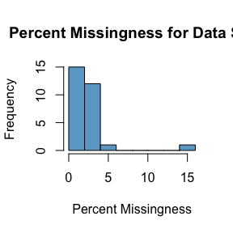
#> $Message
#> [1] "There are 0 variables with a percent missingness > 95% in your data set."
#>
#> $threshold_summary
#> [1] missing percent_missingness
#> <0 rows> (or 0-length row.names)
#>
#> $full_missingness_summary
#> missing percent_missingness
#> SAMPLE_ID 16 16
#> SMOKING_HX 5 5
#> PHYSICAL_ACTIVITY 4 4
#> WEIGHT 3 3
#> BMI 3 3
#> OBESITY 3 3
#> ABD_CIRC 3 3
#> HIP_CIRC 3 3
#> ABD_SKF 3 3
#> SUP_SKF 3 3
#> RESIST 3 3
#> REACT 3 3
#> HX_DM 3 3
#> HX_STROKE 3 3
#> HEIGHT 2 2
#> CUFFSIZE 2 2
#> BP_SYSTOLIC 2 2
#> BP_DIASTOLIC 2 2
#> HTN 2 2
#> HX_ANXIETY 2 2
#> HX_DEPRESSION 2 2
#> SUBJECT_ID 0 0
#> AGE 0 0
#> SEX 0 0
#> LENGTH_SMOKING_YEARS 0 0
#> HEART_RATE 0 0
#> SOCIAL_SUPPORT 0 0
#> PERCEIVED_CONFLICT 0 0
#> PERCEIVED_HEALTH 0 0Above we that there are 0 variables in our example data set that have
a percent missingness >95%. Navigating through the output, we also
see a complete summary of missingness in our data set, with
SAMPLE_ID having the highest % missingness at 16%. Finally
we see a histogram plotting missingness across our data set.
6.1.2 Values Missing Tables
In the value_missing_table function, for each variable,
we have three sets of possible values:
- the set D of all the unique values observed in the data;
- the set V of all the values explicitly encoded in the VALUES columns
of the data dictionary; and
- the set M of the missing value codes defined by the user via the
non.NA.missing.codesargument.
This function examines various intersections of these three sets, providing awareness checks about possible issues of concern.
results.list <- value_missing_table(DD.dict.B, DS.data.B, non.NA.missing.codes = c(-9999))
#> $Message
#> [1] "Flag: at least one check flagged."
#>
#> $Information
#> # A tibble: 7 × 4
#> check.name check.description check…¹ details
#> <chr> <chr> <chr> <named >
#> 1 Check A: In M, Not in D "All missing value codes are … Flag <tibble>
#> 2 Check B: In V, Not in D "All value codes are in the d… Flag <tibble>
#> 3 Check C: In M, Not in V "All missing value codes are … Flag <tibble>
#> 4 Check D: In M & in D, not in V "All missing value codes are … Flag <tibble>
#> 5 Check E: V NOT in M, NOT in D "All value codes no defined a… Passed <chr>
#> 6 Awareness: NsetD vs. NsetV "Size of Set D vs size of set… Info <tibble>
#> 7 Awareness: N_DnotM vs. N_VnotM "Size of Set D\\M vs size of … Info <tibble>
#> # … with abbreviated variable name ¹check.status
results <- results.list$report6.1.2.1 Check A: If the user defines a missing value code that is not present in the data (In Set M and Not in Set D).
| VARNAME | AllMInD | NsetD | NsetM | NsetDAndSetM | MNotInD | MInD |
|---|---|---|---|---|---|---|
| SEX | FALSE | 2 | 1 | 0 | -9999 | |
| LENGTH_SMOKING_YEARS | FALSE | 12 | 1 | 0 | -9999 | |
| HEART_RATE | FALSE | 44 | 1 | 0 | -9999 | |
| SOCIAL_SUPPORT | FALSE | 5 | 1 | 0 | -9999 | |
| PERCEIVED_CONFLICT | FALSE | 24 | 1 | 0 | -9999 | |
| PERCEIVED_HEALTH | FALSE | 10 | 1 | 0 | -9999 |
The above table lists the variables for which the user-defined
missing value code of -9999 is not present in the data.
These are not necessarily errors, however, as dbGaPCheckup
reads non.NA.missing.codes as “global” missing value codes,
even if a specific variable does not contain the code. For example, in
the example data set, the SEX variable is complete, containing no
missing value codes and only containing encoded values of 0=male, and
1=female, but SEX is flagged in the above variable list
since it does not contain a -9999 value. In other words,
this variable’s presence in the above list is NOT an issue that we
should be concerned about. This function is attended only to bring
awareness to potential errors in your data (e.g., perhaps you knew that
the sex variable was missing for 5 participants for your specific
study.)
Interpretation of table column names:
–> AllMInD: Variable-specific check result communicating
if user-defined missing value code(s) are detected in the data set
(FALSE=no).
–> NsetD: Number of values (or levels) detected in the
data (e.g., in this example, SEX has two levels [0=male,
1=female]).
–> NsetM: Number of missing value codes defined (e.g.,
in this example, 1 user-defined missing value code [-9999]
was defined).
–> NsetDAndSetM: Number of occurrences detected in both
the data set and the user-defined missing value code (e.g., here 0
overlap for these variables, but if a second missing value code were
defined, we might see a 1 here).
–> MNotInD: User-defined missing value code the function
checked for (e.g., in this example, -9999).
–> MInD: Variable-specific number; user-defined missing
value codes detected in the data (e.g., in this example, 0).
6.1.2.2 Check B: If a VALUES entry defines an encoded code value, but that value is not present in the data (In Set V and Not in Set D).
| VARNAME | AllVsInD | NsetD | NsetV | NsetDAndSetV | VsNotInD |
|---|---|---|---|---|---|
| LENGTH_SMOKING_YEARS | FALSE | 12 | 2 | 1 | -9999 |
| HEART_RATE | FALSE | 44 | 1 | 0 | -9999 |
The above table lists variables for which a VALUES entry defines an encoded value (i.e., value=meaning; e.g., 0=male), but that value is not present in the data. While ideally all defined encoded values (i.e., in set V) should be observed in the data (i.e., in set D), it is NOT necessarily an error if one does not.
Interpretation of table column names:
–> AllVsInD: Check result communicating if all parsed
VALUES entries were detected in the data set (FALSE=no).
–> NsetD: Number of values (or levels) detected in the
data (e.g., in this example, LENGTH_SMOKING_YEARS has 12
unique levels).
–> NsetV: Number of encoded value codes detected (e.g.,
for this example, LENGTH_SMOKING_YEARS has two encoded
values).
–> NsetDAndSetV: Number of occurrences detected in both
the data set and the VALUES entries (e.g., for this example,
LENGTH_SMOKING_YEARS has one of the two encoded values
detected in the data).
–> VsNotInD: Encoded value not detected in the data
(e.g., for this example, -9999 was not detected in either variable).
So this awareness check alerts us to two potential errors.
Specifically, -9999 is defined as a missing value code for
LENGTH_SMOKING_YEARS and HEART_RATE, but this
code is not detected in the data itself.
# Smoking
table(DS.data.B$LENGTH_SMOKING_YEARS)
#>
#> -4444 0.5 1.5 5 10 14 15 25 44 45 50 52
#> 84 1 1 1 1 1 3 2 2 1 2 1
dictionary_search(DD.dict.B, search.term=c("LENGTH_SMOKING_YEARS"), search.column=c("VARNAME"))
#> # A tibble: 1 × 21
#> VARNAME VARDESC DOCFILE TYPE UNITS MIN MAX RESOL…¹ COMME…² COMME…³
#> <chr> <chr> <lgl> <chr> <chr> <dbl> <dbl> <lgl> <lgl> <lgl>
#> 1 LENGTH_SMOKIN… How ma… NA deci… years NA NA NA NA NA
#> # … with 11 more variables: VARIABLE_SOURCE <lgl>, SOURCE_VARIABLE_ID <lgl>,
#> # VARIABLE_MAPPING <lgl>, UNIQUEKEY <lgl>, COLLINTERVAL <lgl>, ORDER <lgl>,
#> # VALUES <chr>, ...18 <chr>, ...19 <chr>, ...20 <chr>, ...21 <chr>, and
#> # abbreviated variable names ¹RESOLUTION, ²COMMENT1, ³COMMENT2
# Heart rate
table(DS.data.B$HEART_RATE)
#>
#> 38 45 46 47 48 49 50 52 54 55 56 57 58 59 60 64 65 67 68 72
#> 1 5 1 1 2 1 1 2 2 1 3 1 5 1 1 1 8 1 2 2
#> 73 74 75 76 78 79 82 83 85 86 90 91 95 96 98 100 105 107 110 113
#> 1 1 9 3 1 1 1 1 9 2 2 1 13 1 1 1 1 1 3 1
#> 114 115 125 135
#> 1 1 1 1
dictionary_search(DD.dict.B, search.term=c("HEART_RATE"), search.column=c("VARNAME"))
#> # A tibble: 1 × 21
#> VARNAME VARDESC DOCFILE TYPE UNITS MIN MAX RESOL…¹ COMME…² COMME…³
#> <chr> <chr> <lgl> <chr> <chr> <dbl> <dbl> <lgl> <lgl> <lgl>
#> 1 HEART_RATE Heart rate… NA inte… beat… NA NA NA NA NA
#> # … with 11 more variables: VARIABLE_SOURCE <lgl>, SOURCE_VARIABLE_ID <lgl>,
#> # VARIABLE_MAPPING <lgl>, UNIQUEKEY <lgl>, COLLINTERVAL <lgl>, ORDER <lgl>,
#> # VALUES <chr>, ...18 <chr>, ...19 <chr>, ...20 <chr>, ...21 <chr>, and
#> # abbreviated variable names ¹RESOLUTION, ²COMMENT1, ³COMMENT2Looking at this more closely, we see a missing value code of -4444,
not -9999, is being used for LENGTH_SMOKING_YEARS, and
HEART_RATE is a complete variable with no missing data.
-9999 could be removed as a VALUES entry for those
variables and -4444 should added as a
non.NA.missing.value.code for this function and example
data set.
6.1.2.3 Check C: If the user defines a missing value code that is not defined in a VALUES entry (In Set M and Not in Set V).
| VARNAME | AllSetMInSetV | NsetV | NsetM | NsetMAndSetV | SetMsNotInSetV |
|---|---|---|---|---|---|
| SEX | FALSE | 2 | 1 | 0 | -9999 |
| CUFFSIZE | FALSE | 4 | 1 | 0 | -9999 |
| SOCIAL_SUPPORT | FALSE | 5 | 1 | 0 | -9999 |
| PERCEIVED_CONFLICT | FALSE | 2 | 1 | 0 | -9999 |
| PERCEIVED_HEALTH | FALSE | 2 | 1 | 0 | -9999 |
Interpretation of table column names:
–> AllSetMInSetV: Variable-specific check result
communicating if user-defined missing value code(s) are detected as a
VALUES entry (FALSE=no).
–> NsetV: Number of encoded value codes detected (e.g.,
in this example, SEX has two levels [0=male,
1=female]).
–> NsetM: Number of missing value codes defined (e.g.,
in this example, 1 user-defined missing value code [-9999]
was defined).
–> NsetMAndSetD: Number of occurrences detected in both
the user-defined missing value code and data set.
–> SetMsNotInSetV: Missing value code defined that was
not detected in the VALUES entries (e.g., here -9999).
6.1.2.4 Check D: If a user-defined missing value code is present in the data for a given variable, but that variable does not have a corresponding VALUES entry (M in Set D and Not in Set V).
| VARNAME | All_MInSetD_InSetV | setMInDNotInV |
|---|---|---|
| CUFFSIZE | FALSE | -9999 |
Interpretation of table column names:
–> All_MInSetD_InSetV: Variable-specific check result
communicating if user-defined missing value code(s) are detected in the
data for a given variable, but that variable does not have a
corresponding VALUES entry (FALSE=no).
–> setMInDNotInV: Encoded value codes detected in the
data but not in a corresponding VALUES entry.
Note that this check identified a true error! Specifically
CUFFSIZE has a missing value code in the data, -9999, that
has not been defined as an encoded value in the VALUES
columns.
6.2 Check E: If a VALUES entry is NOT defined as a missing value code AND is NOT identified in the data. ((Set V values that are NOT in Set M) that are NOT in Set D).
| x |
|---|
| Passed |
Interpretation of table column names:
–> All_VNotInM_NotInD: Variable-specific check result
communicating if encoded values that are NOT defined as a missing value
code are detected in the data (FALSE=no).
–> setVNotInM_NotInD: Encoded value codes detected as a
VALUES entry but NOT listed as a missing value code and NOT detected in
the data.
In our example here, all VALUES entries that are NOT defined as missing values codes are listed in the data - so our check passes.
6.3 Appendix B: Data Report
Next we can run create_report, which generates a textual
and graphical report of the selected variables in HTML format which will
optionally open the report in a web browser. This awareness report is
designed to help you catch other potential errors in your data set. Note
that the report generated is quite long however, so we recommend that
you only submit subsets of variables at a time. In the example below,
for speed of rendering, we create the report for variables only in
columns 3 through 7. Note that there is an option to plot/report the
data split by sex if desired. Specification of missing value codes are
also important for effective plotting.
Again, the code below generates a nearly identical output to the
create_report function, with some additional annotation
added here for the purposes of this vignette and ease of
interpretation.
# Not run as works best when run interactively
create_report(DD.dict, DS.data, sex.split=TRUE, sex.name= "SEX",
start = 3, end = 7, non.NA.missing.codes=c(-9999,-4444),
output.path= tempdir(), open.html=TRUE)6.3.1 Summary and plots
#>
#> Attaching package: 'dplyr'
#> The following objects are masked from 'package:stats':
#>
#> filter, lag
#> The following objects are masked from 'package:base':
#>
#> intersect, setdiff, setequal, union
dat_function_selected(DS.data.B, DD.dict.B, sex.split = TRUE, sex.name = "SEX", start = 3, end = 6, dataset.na=dataset.na, h.level=4)6.3.1.1 AGE - integer
Check passed: AGE is integer TYPE and all integers 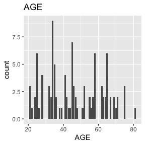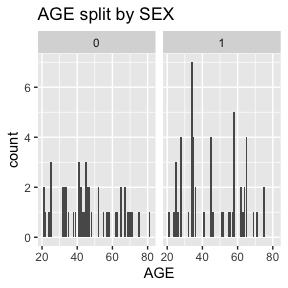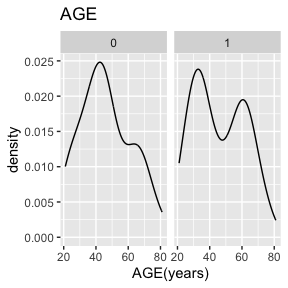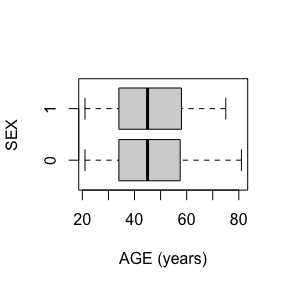
AGE has no missing values.
AGE has no missing values after mapping missing codes to NA.
6.3.1.2 SEX - integer, encoded value
Check passed: SEX is integer TYPE and all integers 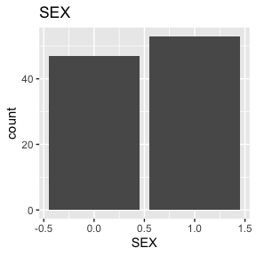
SEX has no missing values.
SEX has no missing values after mapping missing codes to NA.
6.3.1.3 HEIGHT - decimal, encoded value
#> Warning: Removed 2 rows containing non-finite values (stat_count).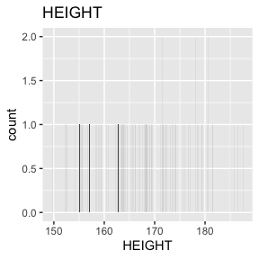
#> Warning: Removed 2 rows containing non-finite values (stat_density).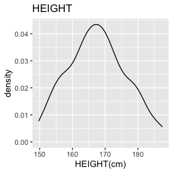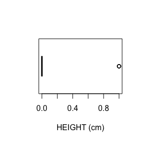
#> Warning: Removed 2 rows containing non-finite values (stat_count).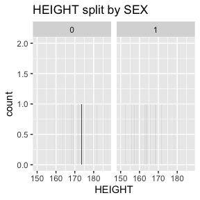
#> Warning: Removed 2 rows containing non-finite values (stat_density).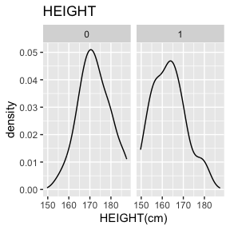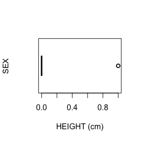
HEIGHT has no missing values.
There are 53 missing values for HEIGHT after mapping missing codes to NA.
6.3.1.4 WEIGHT - decimal, encoded value
#> Warning: Removed 3 rows containing non-finite values (stat_count).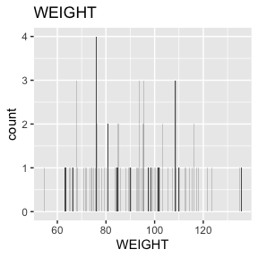
#> Warning: Removed 3 rows containing non-finite values (stat_density).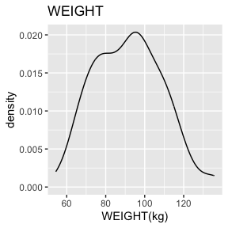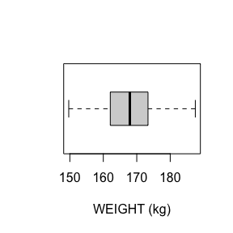
#> Warning: Removed 3 rows containing non-finite values (stat_count).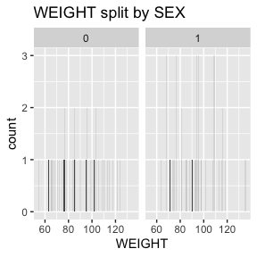
#> Warning: Removed 3 rows containing non-finite values (stat_density).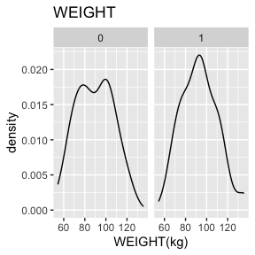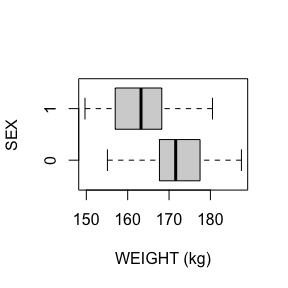
WEIGHT has no missing values.
There are 2 missing values for WEIGHT after mapping missing codes to NA.
Above we see a full report for variables AGE,
SEX, HEIGHT, and WEIGHT as well
as AGE, HEIGHT, and WEIGHT split
by sex. Given the complexity of many data sets, this report was created
so that investigators could more easily manually review the data for
potential errors (e.g., sex=male appearing in a data of pregnant
participants who were all female assigned at birth).
7 Contact information
If you have any questions or comments, please feel free to contact us!
Lacey W. Heinsberg: law145@pitt.edu
Daniel E. Weeks: weeks@pitt.edu
Bug reports: https://github.com/lwheinsberg/dbGaPCheckup/issues
8 Acknowledgments
This package was developed with partial support from the National
Institutes of Health under award numbers R01HL093093, R01HL133040, and
K99HD107030. The eval_function and
dat_function functions that form the backbone of the
awareness reports were inspired by an elegant 2016 homework answer
submitted by Tanbin Rahman in our HUGEN 2070 course ‘Bioinformatics for
Human Genetics’. We would also like to acknowledge Nick Moshgat for
testing and providing feedback on our package.